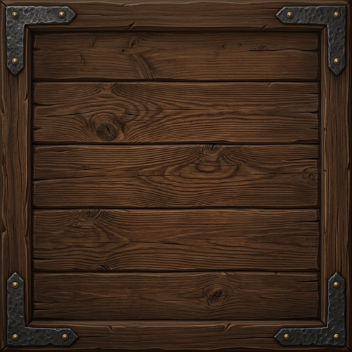

DAWN OF KIN · UI-0 R1 · PRANCHA DE IDENTIDADE VISUAL
Conceito A — A Era dos Fundadores
Artesanato talhado em cedro escuro, ferro forjado com rebites de latão e silhuetas chanfradas de sobrevivência tátil.
Assets 100% originais · Validado em Godot 4.7.2
1280×720 & 1920×1080 · Intel UHD Graphics 620
1280×720 & 1920×1080 · Intel UHD Graphics 620
1. Material Principal (9-Slice Godot)

Textura 9-slice pintada sob medida (512×512) em cedro escuro com cantoneiras de ferro martelado e rebites — direta no StyleBoxTexture do Godot 4.7.2.
2. Paleta Cromática
Cedro
#3A2617
Ferro
#363839
Latão
#D6B06C
Oliva
#69854F
3. Hierarquia Tipográfica
DAWN OF KIN — Título / Linhagem
Abrigo Básico · Casa Fundadora · Primavera
Texto funcional e contadores tabulares: Madeira 24 · Pedra 14 · Alimentos 18 · 42% (1 / 2)
4. Iconografia Original e Coerente
wood
stone
food
build
tasks
house
5. Botões e Estados de Interação (Normal · Hover · Ativo · Desabilitado)
Normal
Hover
Pressionado
Desabilitado
6. Casa Fundadora & Emblema

Alden


Brena
7. Peça Assinatura & Silhueta Espacial

Viga Central Talhada + Estacas de Fundadores + Ferramentas Octogonais.
Cada superfície remete a madeira, ferro batido e rebites de latão. Os retratos usam silhueta de escudo; ações usam botões octogonais de ferramenta.
Cada superfície remete a madeira, ferro batido e rebites de latão. Os retratos usam silhueta de escudo; ações usam botões octogonais de ferramenta.